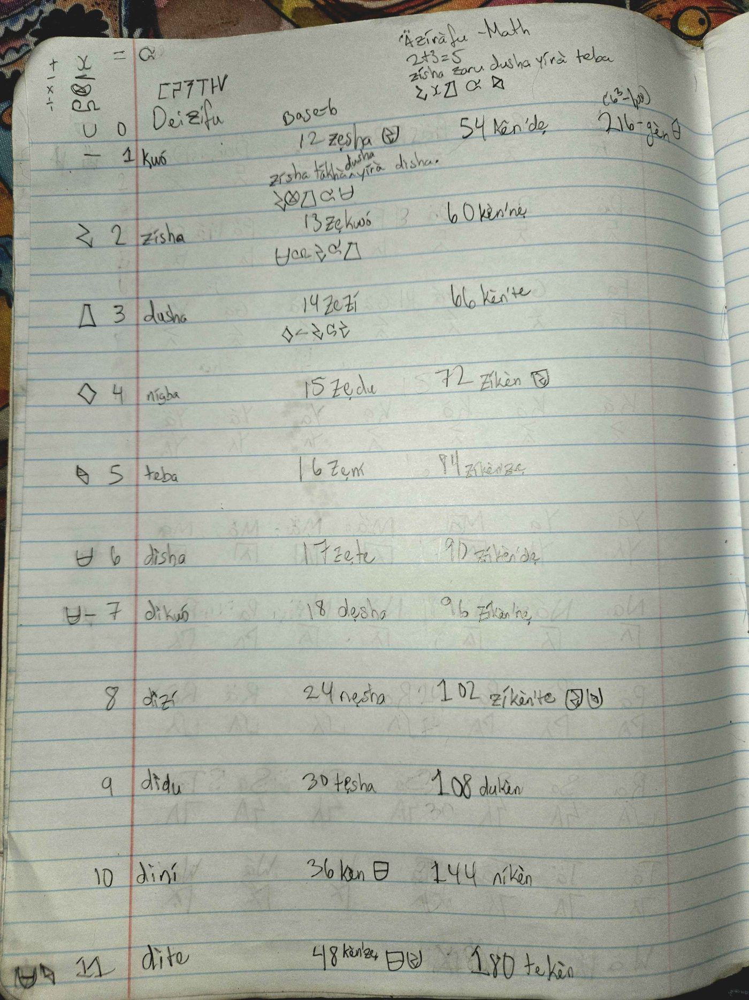
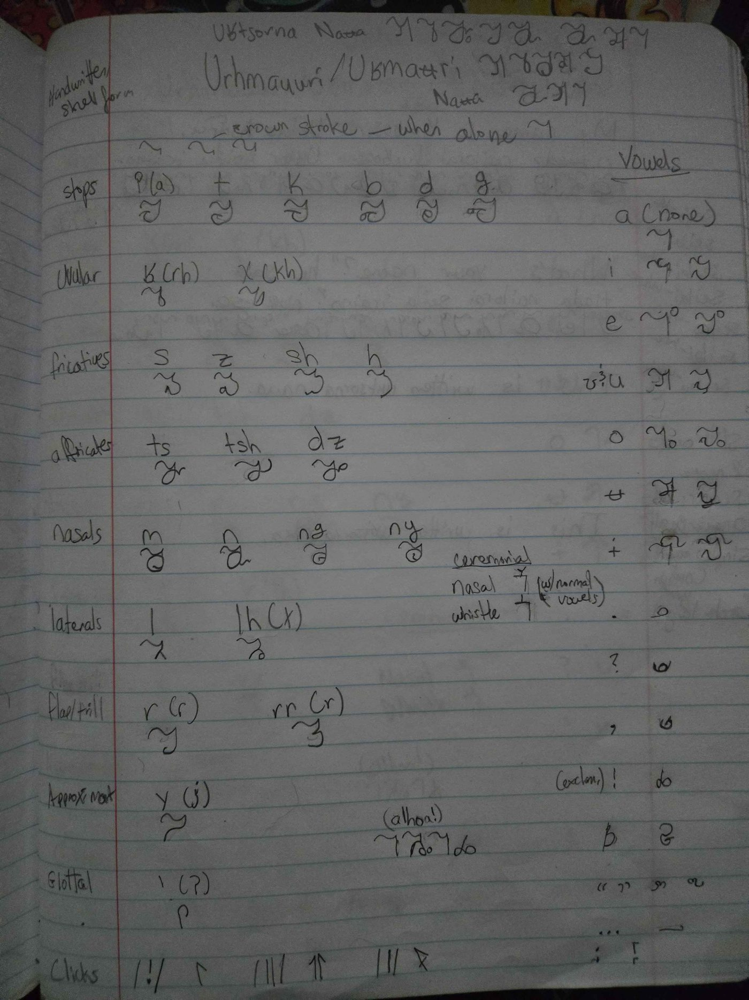
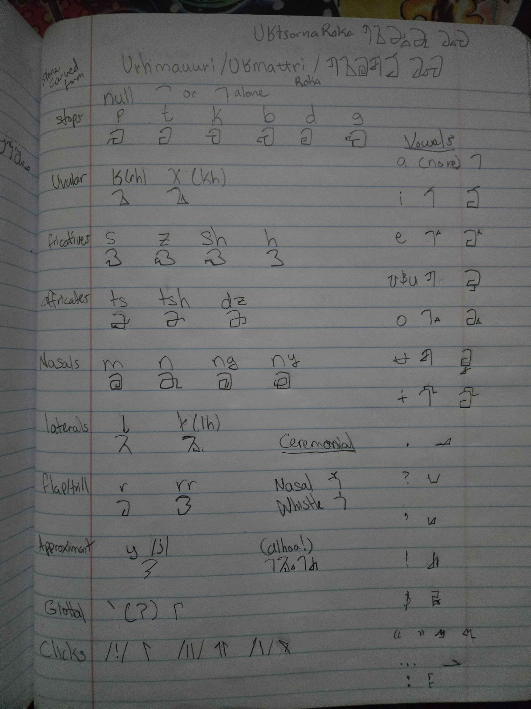
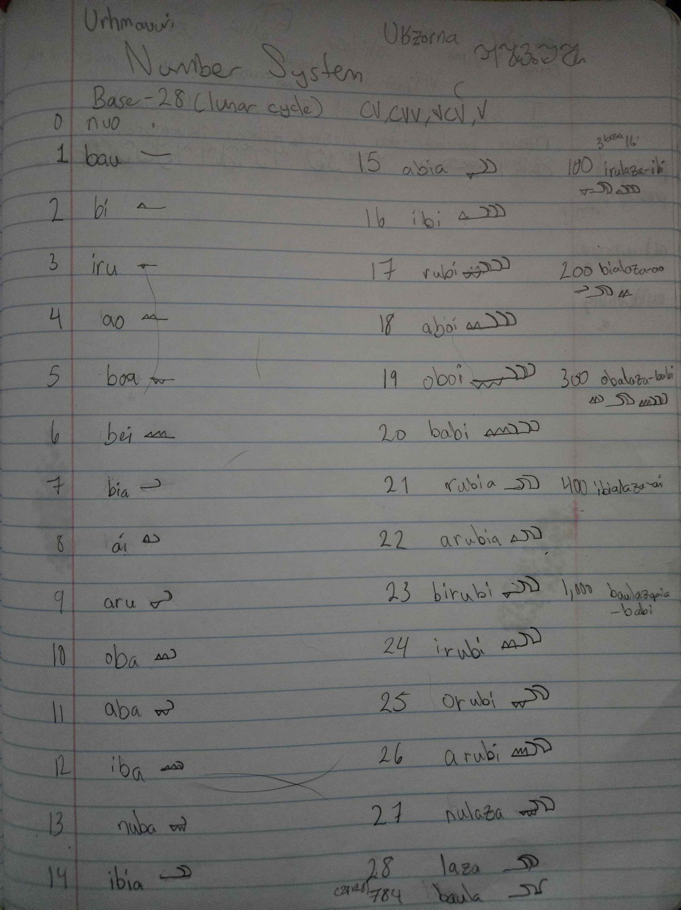
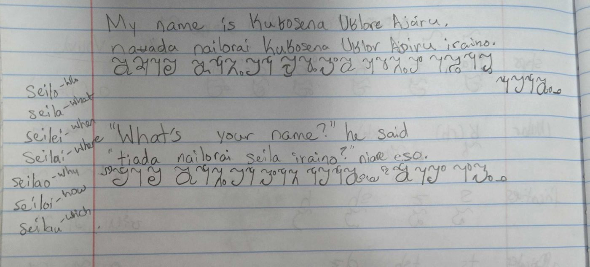
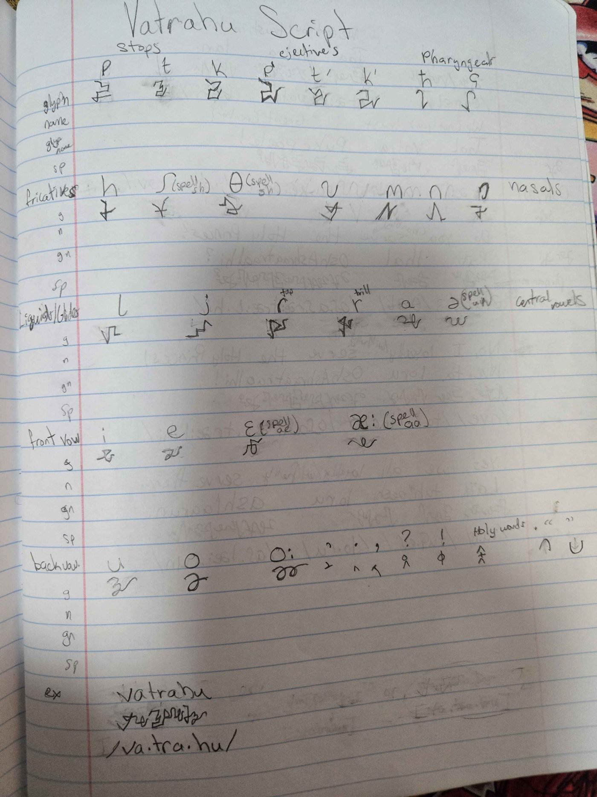
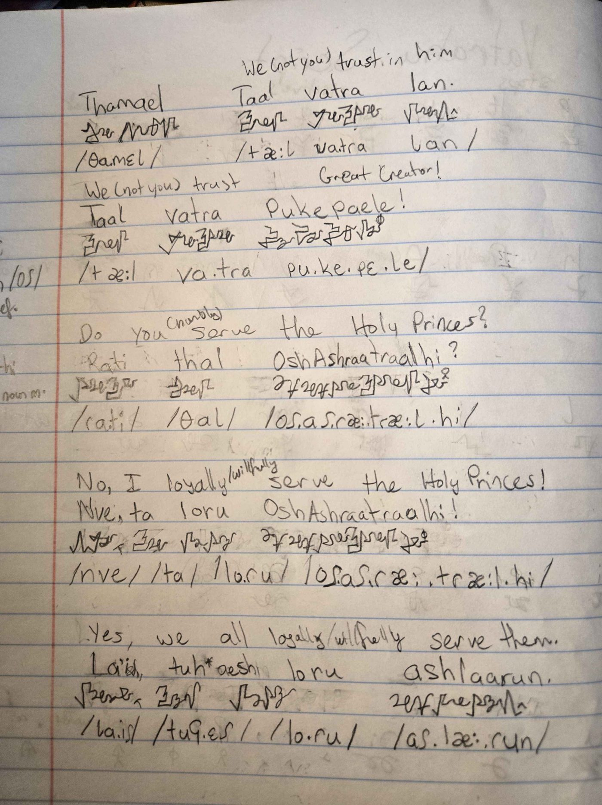
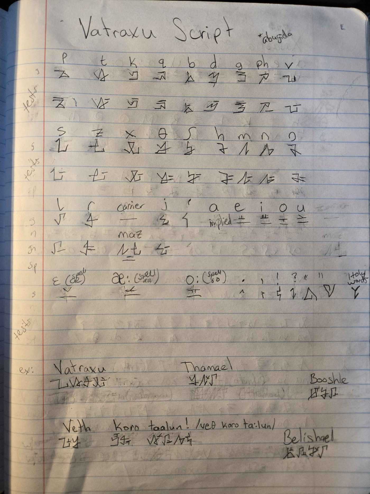
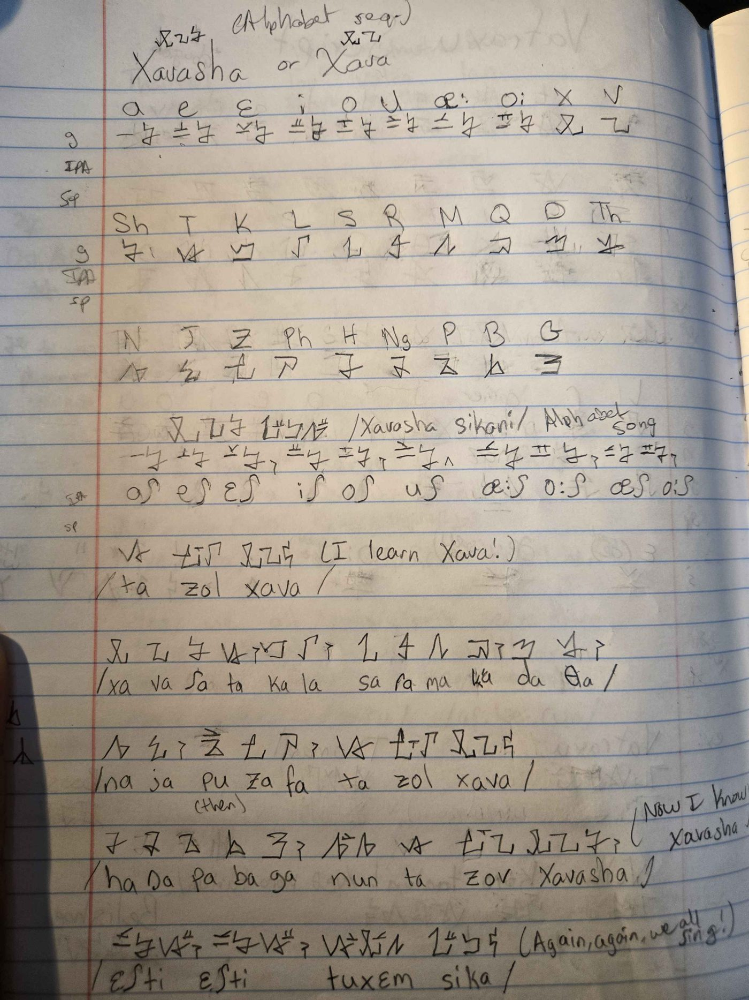

Writing systems
How each language family is written, with the script details recorded so far.
Lines without a tag are settled canon from the Kanna reference documents. Tags mark anything less settled.
At a glance
| Family | Language | Script | Type |
|---|---|---|---|
| Stamfaen | Lyndfên, Kannafên, Sharafên | Lifetega, the leaf-hand | Flowing |
| Stamfaen | Rejfên | Skoentega, the gate-hand | Runic |
| Stamfaen | Mylzhfã, Dorrwfø | Script undecided. Latin letters with plain-text conventions are the placeholder. | Romanized placeholder |
| Nọk | Nọk and its four dialects | Standard script, with a Latin romanization | Alphabet with accent marks |
| Urhmauuri | Urhmauuri | Urhtsorna | Abugida with a wave crown stroke |
| Vatrajarə | Vatrahu | Vatrahu script, with a Latin romanization for typing | Alphabet, cursive-looking |
| Vatrajarə | Vatraxu | Vatraxu script (Xavasha), with a Latin romanization for typing | Abugida |
| Selo | Selo | Script undecided. Planned: sigil glyphs with a pinyin-style romanization. Romanization is the placeholder. | Romanized placeholder |
| Mouane | Mouane Fort and Léger | Latin alphabet, French orthography | Alphabet |
Where a language has a native script but no typable font has been made yet, its text is written in romanization here and in other digital text. Decided
Stamfaen family
Lyndfên is written in Lifetega, the leaf-hand: a flowing script. Rejfên is written in Skoentega, the gate-hand: a runic script. Canon Kannafên and Sharafên are also written in Lifetega. Decided Mylzhfã and Dorrwfø have no script decided yet. They are written in Latin letters with a plain-text spelling, which is a placeholder, and the same spelling is used for typing and search. Placeholder
Plain-text spellings
| Language | Conventions |
|---|---|
| All | è is a stressed /ɛ/. ê marks the ae to ê reduction in the daughters. Stamfaen always keeps the full ae. |
| Mylzhfã | sh = ṣ, rn = ṇ, rd = ḍ, rt = ṭ, gh = implosive g, bh = implosive b, yh = palatal fricative, lh = voiceless lateral, ll = dark l, zh = voiced postalveolar, hq = ħ. |
| Dorrwfø | w = ɯ, rr = uvular trill, rh = voiceless r at the end of a word, lh = voiceless lateral at the start of a word, lf = dark l at the end of a word, hh = pharyngeal ħ, hq = epiglottal ʕ, a plain apostrophe = glottal stop. |
Example images to be added. Placeholder
Nọk
Nọk is written in Latin letters with accents and under-dots. It has ten vowels, four diphthongs, the separate letter č and seven letter pairs (kh, ch, ny, kw, zh, sh, ng). An accent changes a vowel’s quality, and so does a dot beneath it. Each dialect adds its own letters: the Northern dialect adds nd, br, st and nk and uses c at the start of a word, the Western adds mgb, l and bh, and the Southern adds ts, tsh, nd and hw. Every dialect has mb. Details are on Nọk.
The first formal writing system was devised long after the faith began, by a scholar who drew on Latin and Greek script and built something new to suit an agglutinative language. It was later simplified into the standard form that Sekh-funded schools teach today. Canon

Urhmauuri: Urhtsorna
Urhtsorna is the Urhmauuri writing system. The name is a sacred archaism: its rn cluster is a deliberate fossil from the oldest register of the language, so the word for writing sounds ancient. It is an abugida with a Kannada-influenced look. Decided
| Feature | Detail |
|---|---|
| Crown stroke | Every consonant begins with a wave sweep that curls at the right end. The crown alone is a null vowel carrier. A bare crown reads as /a/, and a crown with a diacritic is a vowel-initial syllable. |
| Stops | An open oval body. The angle of the exit stroke tells p, b, t, d, k and g apart, and a mark on the exit stroke shows voicing. |
| Uvulars (rh, kh) | A downward teardrop, the sacred direction. Kh adds a horizontal strike through it. |
| Fricatives (s, z, sh, h) | An open crescent. S has a straight exit, sh a curved one, and h is the most open. |
| Affricates | A closed stop body with a curved fricative-style exit. |
| Nasals | A fully closed rounded loop, told apart by the direction of the tail. |
| Laterals (l, lh) | A forked, split body. |
| Flap and trill (r, rr) | A crown with a flutter hook for r, and a doubled zigzag for rr. |
| Glide (y) | The crown stroke alone, with no body. |
| Glottal stop | A single small mark with no crown. |
| Clicks | Angular geometric marks with no crown, used in the sacred Haulorai register only. |
| Vowels | None for /a/. A hook above the crown on the left for /i/, a dot above the crown on the right for /e/, a double hook below for /uu/, a circle below on the right for /o/, a hook below on the left for /u/, and a dash through the body for /ii/. |
| Diphthongs | The second vowel is written on a following crown carrier. |
| Ceremonial marks | A nasal overlay, and a whistle pitch mark for the Royal level only. |
| Punctuation | Full stop, comma, question mark, quotation marks, ellipsis and dash. The exclamation mark shows emotion, not a command, because a bare verb form already gives commands. |
Three registers
| Register | What it is |
|---|---|
| Shell, handwritten | The full flowing forms, for everyday literacy. |
| Stone, public | The same letterforms carved more deliberately. There is no separate simplified alphabet. |
| Coral growth, Urhtsorna Hausonai | Stone forms act as an armature, and coral colonizes them under the guidance of an Urhmauuka’s Ruala. Vowels are encoded by color and by the direction of growth. |
Each manner of articulation shares one base shape, so a building can be marked by its dominant glyph family. Glyphs carved into young coral grow raised and weathered as the coral hardens. Proposed
The number system, Urhzorna
Urhzorna counts in base 28, the length of the lunar cycle, which is one laza. Its organizing unit is the baula, which is 28 squared, or 784. Decided




Vatrahu and Vatraxu
Both languages have native scripts, and each also has a Latin romanization for typing. Vatraxu has 19 consonants and 7 vowels. Ph is the f sound and is never written as a plain f. Sh is ʃ, ng is ŋ, a doubled vowel is long, q is an ejective, and an apostrophe marks a break between two vowels. Vatrahu uses the IPA letters ħ, ʕ and ə, with “uh” as the working stand-in for the schwa, and marks its ejectives with a caret, as in p^, t^ and k^. Details are on Vatrahu and Vatraxu. Canon
Vatrahu script
Vatrahu is written in an alphabet with a cursive look. The chart sorts its signs into stops, ejectives, pharyngeals, fricatives, nasals, liquids and glides, and central, front and back vowels. It has marks for full stops, commas, question and exclamation marks, quotation marks and holy words. The ejectives and pharyngeals have signs of their own. Decided The script has no name yet. Open


Vatraxu script
Vatraxu is written in an abugida. The vowel /a/ is implied, the other vowels are marks, and a carrier sign holds a vowel when no consonant comes before it. The long and open vowels ɛ, aa and oo are spelled with their romanized letters. Like Vatrahu, it has a mark for holy words. Decided The script has no name yet. Open
Xavasha is the name of the complete syllable set and of the song that teaches it, the way a kana or hangul song teaches its letters. Xava is the short nickname. The song, Xavasha sikani, runs through the set in order, and the learner’s first sentence is Ta zol xava, “I learn Xava.” Decided


Selo
Selo’s script is undecided, and romanization is the placeholder. The plan is for Selo to be written as a corruption of Vatraxu, Latin and Mandarin, in two layers: a pinyin-style romanization, and a hanzi-like script of sigils. The sigils would look like the woven spell sigils of fantasy witches, so a spell can be woven as writing or spoken. Proposed
Every syllable is (C)V(N) plus a tone. A final /ŋ/ is always written ng, /tʃ/ is ch, /ʃ/ is sh, and there are no silent letters. Stress for chanting falls on the first tone-bearing syllable, unless a tone 6 syllable appears, and tone 6 syllables are always stressed. Decided
| Layer | Selo name | What it does |
|---|---|---|
| Sigil script | sin¹ si³ | A hanzi-like script. It combines radicals into sigils that carry meaning, and one sigil can stand for a root or give a syllable. |
| Romanized writing | ro¹ si³ | Latin letters with tone numbers or accent marks, like Pinyin. |
| Reading aloud | do¹ lo³ | The native pronunciation attached to a sigil, like the kun reading of a kanji. |
The planned flow of a spell runs in three steps: the old Latin words and spells, then a Vatraxu transliteration with occasional translation, then the Selo transliteration. Proposed
The earlier plan had a third layer, a helper syllabary (yu¹ si³). It is dropped. Proposed
Example images to be added. Placeholder
Mouane
Mouane has no script of its own and uses the Latin alphabet. See Mouane. Fort and Léger are written in French orthography. Fort drops the tréma on split vowels and Léger keeps it as a learning aid. Decided
Open questions
- Final scripts for Mylzhfã, Dorrwfø and Selo. Open
- Names of the Vatrahu and Vatraxu scripts. Open
- Typable fonts for the native scripts. Open
- Sample images for the scripts not shown yet. Open
- Whether Nọk’s standard script has a name in the language. Open